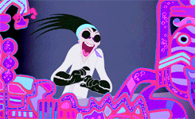

Kuzco estava comendo os doces que recebeu de seus súditos quando acabou se alimentando de um doce envenenado com a poção para se tornar lhama. Sem saber que Izma tenta tomar seu trono, Kuzco precisa pegar o antídoto para voltar ao normal. Entretanto quando acordou estava longe do Palácio, na carroça de um camponês que mora extremamente longe do palácio e teria que atravessar um longo caminho para voltar.
1 - Pede ajuda ao camponês Patcha para tentar voltar ao palácio.
2 - Vê a selva à frente e tenta atravessar sozinho sem a ajuda do camponês Patcha.